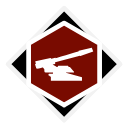

Map
Nearby locations
The 10 closest locations, measured in a straight line between the map markers (1 world unit is 1 metre), with the direction to go from here.
| Location | Kind | Region | Distance | Direction |
|---|---|---|---|---|
 Torsberga Fort Torsberga Fort | Military base | South Coast | 229 m | N |
 Core Neural Node Core Neural Node | FNIX site | South Coast | 460 m | N |
 Torsberga Control Point Torsberga Control Point | Control point | South Coast | 496 m | N |
 Hällabacken High Security Prison Hällabacken High Security Prison | FNIX site | South Coast | 522 m | NW |
 Lysehamn Lysehamn | Settlement | South Coast | 545 m | W |
 Hällabacken Farm Hällabacken Farm | FNIX site | South Coast | 625 m | NW |
 FNIX Central Nervous System #10011 | FNIX site | South Coast | 847 m | N |
 Solhöjden Cable Node Solhöjden Cable Node | FNIX site | South Coast | 868 m | NW |
| Tokeröd Cable Node | FNIX site | South Coast | 879 m | NE |
 Villa Solhöjden Villa Solhöjden | Farm | South Coast | 883 m | NW |
Safehouse
No safehouse here. The nearest one is Torsberga Fort (South Coast), 319 m to the north-east.
Loot
The location's files list 6 loot crate spawn points. These are the crates your save counts for this location's loot progress.
Placed loot within 200 m that is closer to Torsberga Cable Node than to any other location (from the interactive map's Extra Locations layer).
| Category | Count | Breakdown |
|---|---|---|
| Weapons | 1 | Q4 1 |
| Crate spots (map layer) | 154 | Ammo boxes 66, Equipment boxes 43, Apparel packs 25, Weapon boxes 10, Bodies 7, Machine wrecks 3 |
From the game files
Two crate numbers. The crate spawn points are the loot crate spawn points listed in the location files: what your save tracks for a location's loot progress. The crate spots (map layer) are every crate spot of the interactive map's loot layer within 200 m that is nearer to this location than to any other, whichever game file it comes from, so the two numbers rarely match. Neither means a crate is always there: the game may leave a spot empty.
Weapons, attachments and other single items placed here:
| Item | Quality | Count |
|---|---|---|
| Sjöqvist Semi-Auto (Exceptional) | Exceptional | 1 |
Missions
No mission text mentions Torsberga Cable Node by name. See the missions of the South Coast region.
From the game files
Distances are straight lines on the map between marker positions. A location's area in the game is not a circle, so the 300 m and 200 m radii on this page are a practical approximation, not the game's own borders.